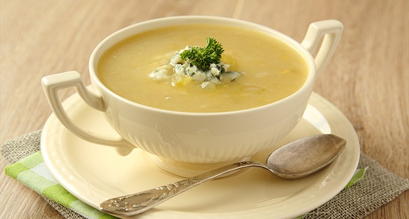

Sopa de Cebolla

La receta de sopa de cebolla es una receta con mucha tradición dentro de nuestra gastronomía, además de ser una receta muy saludable y económica de preparar, que normalmente se consume en las épocas de más frío.
Elija entre ir a los ingredientes o saber su elaboración
Gol de señor
- 1 Kg. de cebollas
- 2 l. de caldo de carne
- 100 gr. mantequilla
- 1 cucharada de harina
- 100 gr. de queso emmental suizo o gruyére rallado
- Pan tostado en rebanadas
- Tomillo
- 1 hoja de laurel
- Pimienta
- Pelar y partir las cebollas en rodajas finas
- Rehogarlas con la mantequilla, sal y pimienta a fuego lento hasta que estén transparentes sin dorarse
- Añadir la harina sin dejar de remover
- Ponerlo en una cazuela con el caldo, el tomillo y el laurel
- Dejar cocer a fuego lento durante unos 15 minutos
- Pon las rebanadas de pan encima, espolvorear el queso y gratinar al horno